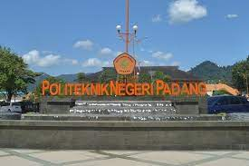

<!DOCTYPE html>
<html>
<head>
    <title>Peta Ketigaku</title>
    <link rel="stylesheet" href="leaflet.css"/>
    <script src="leaflet.js"></script>
</head>
<body>
    <div id="mapku" style="width: 100%; height: 600px;"></div>

</body>
<script type="text/javascript">
     var mymap = L.map('mapku').setView([-0.9137822,100.4640162],17);
    
     L.tileLayer('https://tile.openstreetmap.org/{z}/{x}/{y}.png', {
        maxZoom:18,
        id:'mapbox/streets-v11',
        tileSize: 512,
        zoomOffset: -1
    }).addTo(mymap);

    var circle = L.circle([-0.9136017389283296, 100.45793871560086],{ 
        color: 'red',
        fillcolor: '#f03',
        fillOpacity: 0.5,
        radius: 500
    }).addTo(mymap).bindPopup('AWWAASSSS REDZONE');

    var polygon = L.polygon([
        [-0.9265751658128111, 100.42777004940375],
        [-0.931743862058688, 100.4414453991694],
        [-0.9136017389283260, 100.45793871560086]
    ]).addTo(mymap).bindPopup('Polygon Sepedaku');

    L.marker([-0.9137822,100.4640162]).bindTooltip("Politeknik Negeri Padang").addTo(mymap); //Politeknik Negeri Padang
    L.marker([-0.9199232970880757, 100.45655697557224]).bindTooltip("Rumah Sakit universitas Andalas").addTo(mymap); //Rumah Sakit universitas Andalas


  var info_pnp ='<p style  ="text-align: center;"></p><p>Politeknik Negeri Padang hadir di tengah-tengah masyarakat dengan menerapkan sistem pendidikan yang konsisten pada jalur pendidikan vokasional dengan menerapkan sistem pembelajaran yang aplikatif serta secara terus menerus menyesuaikan diri dengan perkembangan dunia industri dan dunia usaha yang ada untuk menghasilkan tenaga kerja yang berkompeten sesuai dengan permintaan pasar dan mampu bersaing pada era persaingan global.</p>';
  var info_unand ='<p style  ="text-align: center;"></p><p>Rumah Sakit Universitas Andalas adalah salah satu rumah sakit yang ada di Kota Padang, Sumatera Barat.[2] Rumah sakit ini berada di bawah pengelolaan Universitas Andalas yang berlokasi di komplek kampus Universitas Andalas, Limau Manis, Kecamatan Pauh, Kota Padang. </p>';
  L.marker([-0.9137822,100.4640162]).bindTooltip("Politeknik Negeri Padang").bindPopup(info_pnp).addTo(mymap); //Politeknik Negeri Padang
  L.marker([-0.9199232970880757, 100.45655697557224]).bindTooltip("Rumah Sakit universitas Andalas").bindPopup(info_unand).addTo(mymap); //Rumah Sakit universitas Andalas

</script>
</html>